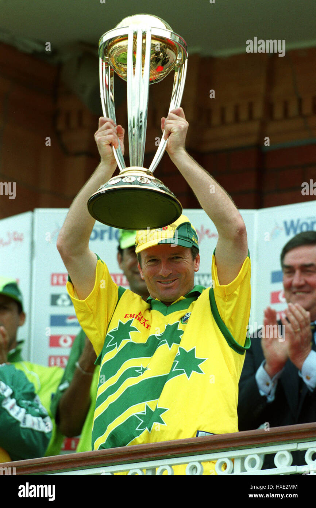
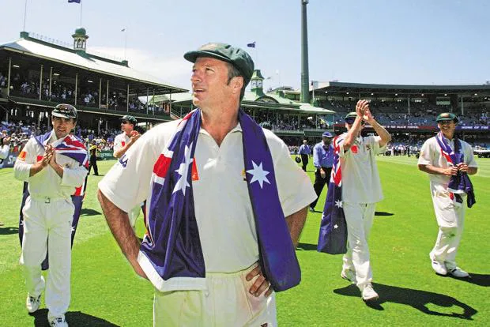

Steve Waugh
Role: Middle-Order Batsman, Captain
Bio: Steve Waugh was one of Australia's most successful captains, known for his gritty batting and steely leadership. He led Australia during their dominant era in the late 1990s and early 2000s, including a historic win at the 1999 Cricket World Cup.
Career Stats
| Format | Matches | Innings | Not Outs | Runs | High Score | Average | Balls Faced | Strike Rate | 100s | 50s | Fours | Sixes |
|---|---|---|---|---|---|---|---|---|---|---|---|---|
| Test | 168 | 260 | 46 | 10927 | 200 | 51.06 | N/A | N/A | 32 | 50 | N/A | N/A |
| ODI | 325 | 288 | 67 | 7569 | 120* | 32.91 | N/A | N/A | 3 | 45 | N/A | N/A |
Memorable Moments

Steve Waugh lifting the 1999 Cricket World Cup after leading Australia to victory with his calm under pressure.
Steve Waugh’s fierce leadership and ability to perform in high-pressure situations made him one of Australia’s greatest captains.